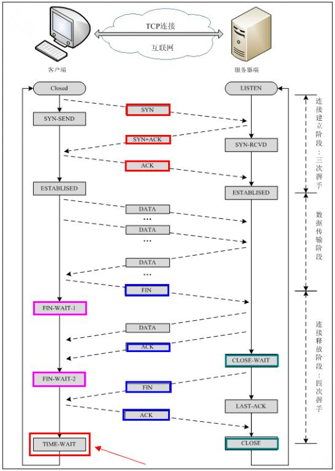
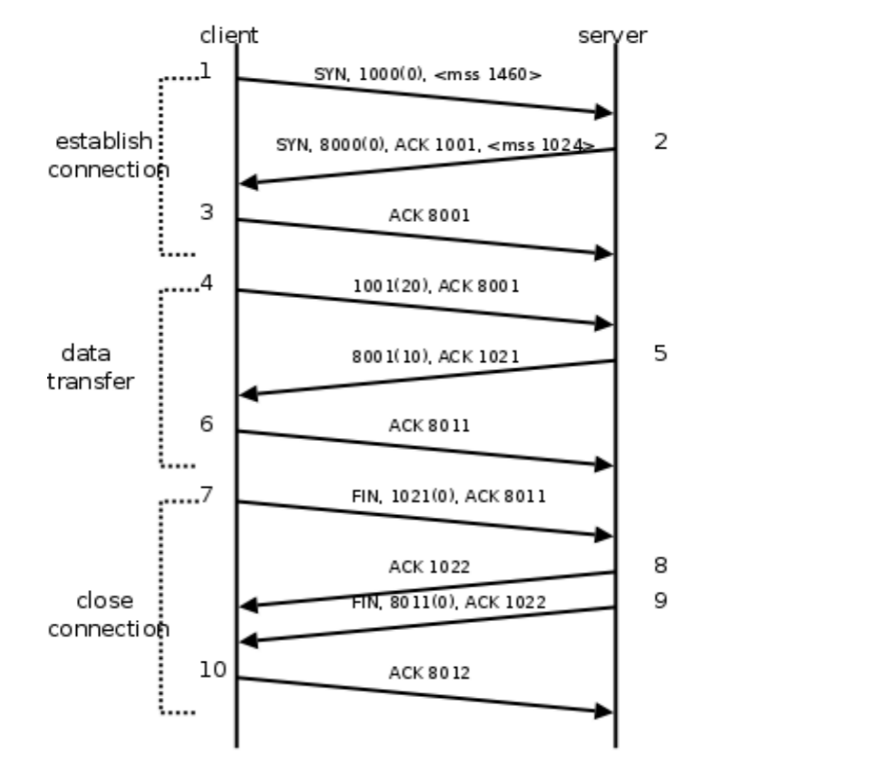

1. TCP通信过程

下图是一次TCP通讯的时序图。TCP连接建立断开。包含大家熟知的三次握手和四次握手。
 在这个例子中，首先客户端主动发起连接、发送请求，然后服务器端响应请求，然后客户端主动关闭连接。两条竖线表示通讯的两端，从上到下表示时间的先后顺序。注意，数据从一端传到网络的另一端也需要时间，所以图中的箭头都是斜的。
1.1. 三次握手：
所谓三次握手（Three-Way Handshake）即建立TCP连接，就是指建立一个TCP连接时，需要客户端和服务端总共发送3个包以确认连接的建立。好比两个人在打电话： Client:“喂，你听得到吗？” Server:“我听得到，你听得到我吗？” Client:“我能听到你，今天balabala…”
建立连接（三次握手）的过程：
客户端发送一个带SYN标志的TCP报文到服务器。这是上图中三次握手过程中的段1。客户端发出SYN位表示连接请求。序号是1000，这个序号在网络通讯中用作临时的地址，每发一个数据字节，这个序号要加1，这样在接收端可以根据序号排出数据包的正确顺序，也可以发现丢包的情况。
另外，规定SYN位和FIN位也要占一个序号，这次虽然没发数据，但是由于发了SYN位，因此下次再发送应该用序号1001。
mss表示最大段尺寸，如果一个段太大，封装成帧后超过了链路层的最大长度，就必须在IP层分片，为了避免这种情况，客户端声明自己的最大段尺寸，建议服务器端发来的段不要超过这个长度。
服务器端回应客户端，是三次握手中的第2个报文段，同时带ACK标志和SYN标志。表示对刚才客户端SYN的回应；同时又发送SYN给客户端，询问客户端是否准备好进行数据通讯。
服务器发出段2，也带有SYN位，同时置ACK位表示确认，确认序号是1001，表示“我接收到序号1000及其以前所有的段，请你下次发送序号为1001的段”，也就是应答了客户端的连接请求，同时也给客户端发出一个连接请求，同时声明最大尺寸为1024。
客户必须再次回应服务器端一个ACK报文，这是报文段3。
客户端发出段3，对服务器的连接请求进行应答，确认序号是8001。在这个过程中，客户端和服务器分别给对方发了连接请求，也应答了对方的连接请求，其中服务器的请求和应答在一个段中发出。
因此一共有三个段用于建立连接，称为“三方握手”。在建立连接的同时，双方协商了一些信息，例如，双方发送序号的初始值、最大段尺寸等。
数据传输的过程：
- 客户端发出段4，包含从序号1001开始的20个字节数据。
- 服务器发出段5，确认序号为1021，对序号为1001-1020的数据表示确认收到，同时请求发送序号1021开始的数据，服务器在应答的同时也向客户端发送从序号8001开始的10个字节数据。
- 客户端发出段6，对服务器发来的序号为8001-8010的数据表示确认收到，请求发送序号8011开始的数据。
在数据传输过程中，ACK和确认序号是非常重要的，应用程序交给TCP协议发送的数据会暂存在TCP层的发送缓冲区中，发出数据包给对方之后，只有收到对方应答的ACK段才知道该数据包确实发到了对方，可以从发送缓冲区中释放掉了，如果因为网络故障丢失了数据包或者丢失了对方发回的ACK段，经过等待超时后TCP协议自动将发送缓冲区中的数据包重发。
1.2. 四次挥手：
所谓四次挥手（Four-Way-Wavehand）即终止TCP连接，就是指断开一个TCP连接时，需要客户端和服务端总共发送4个包以确认连接的断开。在socket编程中，这一过程由客户端或服务器任一方执行close来触发。好比两个人打完电话要挂断：
- Client:“我要说的事情都说完了，我没事了。挂啦？”
- Server:“等下，我还有一个事儿。Balabala…”
- Server:“好了，我没事儿了。挂了啊。”
- Client:“ok！拜拜”
关闭连接（四次握手）的过程：
由于TCP连接是全双工的，因此每个方向都必须单独进行关闭。这原则是当一方完成它的数据发送任务后就能发送一个FIN来终止这个方向的连接。收到一个 FIN只意味着这一方向上没有数据流动，一个TCP连接在收到一个FIN后仍能发送数据。首先进行关闭的一方将执行主动关闭，而另一方执行被动关闭。
- 客户端发出段7，FIN位表示关闭连接的请求。
- 服务器发出段8，应答客户端的关闭连接请求。
- 服务器发出段9，其中也包含FIN位，向客户端发送关闭连接请求。
- 客户端发出段10，应答服务器的关闭连接请求。
建立连接的过程是三次握手，而关闭连接通常需要4个段，服务器的应答和关闭连接请求通常不合并在一个段中，因为有连接半关闭的情况，这种情况下客户端关闭连接之后就不能再发送数据给服务器了，但是服务器还可以发送数据给客户端，直到服务器也关闭连接为止。
2. UDP
在之前的案例中，我们一直使用的是TCP协议来编写Socket的客户端与服务端。其实也可以使用UDP协议来编写Socket的客户端与服务端。
2.1. UDP服务器
由于UDP是“无连接”的，所以，服务器端不需要额外创建监听套接字，只需要指定好IP和port，然后监听该地址，等待客户端与之建立连接，即可通信。
创建监听地址：
func ResolveUDPAddr(network, address string) (*UDPAddr, error)创建用户通信的socket：
func ListenUDP(network string, laddr *UDPAddr) (*UDPConn, error)接收udp数据：
func (c *UDPConn) ReadFromUDP(b []byte) (int, *UDPAddr, error)写出数据到udp：
func (c *UDPConn) WriteToUDP(b []byte, addr *UDPAddr) (int, error)
服务端完整代码实现如下：
package main
import (
"fmt"
"net"
)
func main() {
//创建监听的地址，并且指定udp协议
udp_addr, err := net.ResolveUDPAddr("udp", "127.0.0.1:8002")
if err != nil {
fmt.Println("ResolveUDPAddr err:", err)
return
}
conn, err := net.ListenUDP("udp", udp_addr) //创建数据通信socket
if err != nil {
fmt.Println("ListenUDP err:", err)
return
}
defer conn.Close()
buf := make([]byte, 1024)
n, raddr, err := conn.ReadFromUDP(buf) //接收客户端发送过来的数据，填充到切片buf中。
if err != nil {
return
}
fmt.Println("客户端发送：", string(buf[:n]))
_, err = conn.WriteToUDP([]byte("nice to see u in udp"), raddr) // 向客户端发送数据
if err != nil {
fmt.Println("WriteToUDP err:", err)
return
}
}
2.2. UDP客户端
udp客户端的编写与TCP客户端的编写，基本上是一样的，只是将协议换成udp。注意只能使用小写。
代码如下：
package main
import (
"net"
"fmt"
)
func main() {
conn, err := net.Dial("udp", "127.0.0.1:8002")
if err != nil {
fmt.Println("net.Dial err:", err)
return
}
defer conn.Close()
conn.Write([]byte("Hello! I'm client in UDP!"))
buf := make([]byte, 1024)
n, err1 := conn.Read(buf)
if err1 != nil {
return
}
fmt.Println("服务器发来：", string(buf[:n]))
}
2.3. 并发
其实对于UDP而言，服务器不需要并发，只要循环处理客户端数据即可。客户端也等同于TCP通信并发的客户端。
服务器：
package main
import (
"net"
"fmt"
)
func main() {
// 创建 服务器 UDP 地址结构。指定 IP + port
laddr, err := net.ResolveUDPAddr("udp", "127.0.0.1:8003")
if err != nil {
fmt.Println("ResolveUDPAddr err:", err)
return
}
// 监听 客户端连接
conn, err := net.ListenUDP("udp", laddr)
if err != nil {
fmt.Println("net.ListenUDP err:", err)
return
}
defer conn.Close()
for {
buf := make([]byte, 1024)
n, raddr, err := conn.ReadFromUDP(buf)
if err != nil {
fmt.Println("conn.ReadFromUDP err:", err)
return
}
fmt.Printf("接收到客户端[%s]：%s", raddr, string(buf[:n]))
conn.WriteToUDP([]byte("I-AM-SERVER"), raddr) // 简单回写数据给客户端
}
}
客户端：
package main
import (
"net"
"os"
"fmt"
)
func main() {
conn, err := net.Dial("udp", "127.0.0.1:8003")
if err != nil {
fmt.Println("net.Dial err:", err)
return
}
defer conn.Close()
go func() {
str := make([]byte, 1024)
for {
n, err := os.Stdin.Read(str) //从键盘读取内容， 放在str
if err != nil {
fmt.Println("os.Stdin. err1 = ", err)
return
}
conn.Write(str[:n]) // 给服务器发送
}
}()
buf := make([]byte, 1024)
for {
n, err := conn.Read(buf)
if err != nil {
fmt.Println("conn.Read err:", err)
return
}
fmt.Println("服务器写来：", string(buf[:n]))
}
}
2.4. UDP与TCP的差异
| TCP | UDP |
|---|---|
| 面向连接 | 面向无连接 |
| 要求系统资源较多 | 要求系统资源较少 |
| TCP程序结构较复杂 | UDP程序结构较简单 |
| 使用流式 | 使用数据包式 |
| 保证数据准确性 | 不保证数据准确性 |
| 保证数据顺序 | 不保证数据顺序 |
| 通讯速度较慢 | 通讯速度较快 |